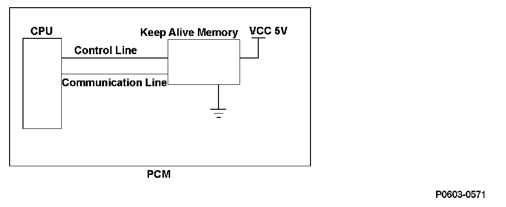
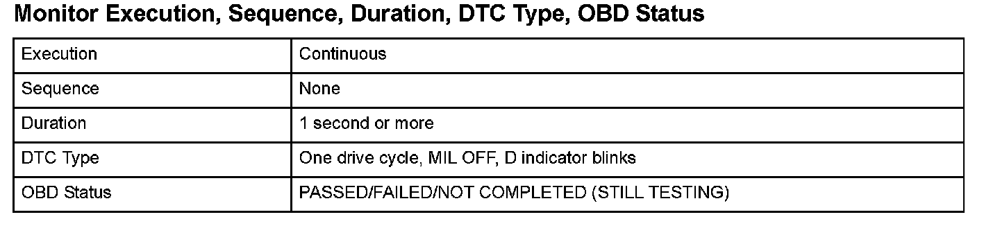
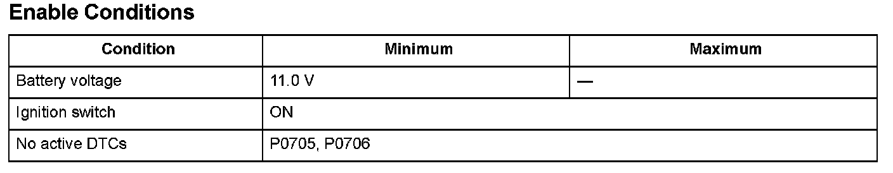

A/T System
DTC P062F: Powertrain Control Module (PCM) Internal Control Module Keep Alive Memory (KAM) Error
General Description
The powertrain control module (PCM) is equipped with a keep-alive memory. The data (control learn data, etc.) for powertrain control and information (vehicle identification number (VIN), etc.) related to vehicle control is stored in the keep alive memory, so that it can be maintained even when power is not supplied to the PCM, such as when the battery is disconnected. When power is restored to the PCM, the CPU retrieves the stored information from the keep-alive memory, but when the data retrieval process is not finished normally, a malfunction is detected and a DTC is stored.
The CPU writes data to the keep-alive memory from the CPU: Control related data is written when the ignition is turned on, and vehicle information when commanded from the HDS.
If the data writing process is not completed normally, a malfunction is detected and a DTC is stored.

Monitor Execution, Sequence, Duration, DTC Type, OBD Status

Enable Conditions
Malfunction Threshold
A malfunction is detected whenever the keep alive data retrieval and writing process is not completed normally.
Diagnosis Details
Conditions for illuminating the indicator
When a malfunction is detected, the D indicator blinks, and the DTC and the freeze frame data are stored in the PCM memory. The MIL does not come on
Conditions for clearing the DTC
The DTC and the freeze frame data can be cleared by using the scan tool Clear command or by disconnecting the battery.